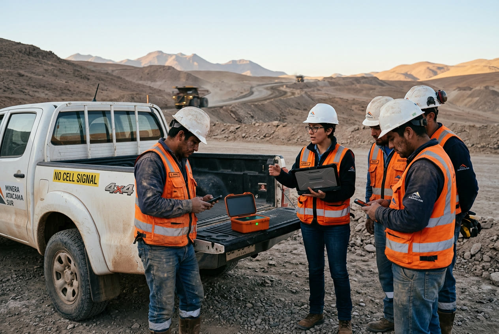
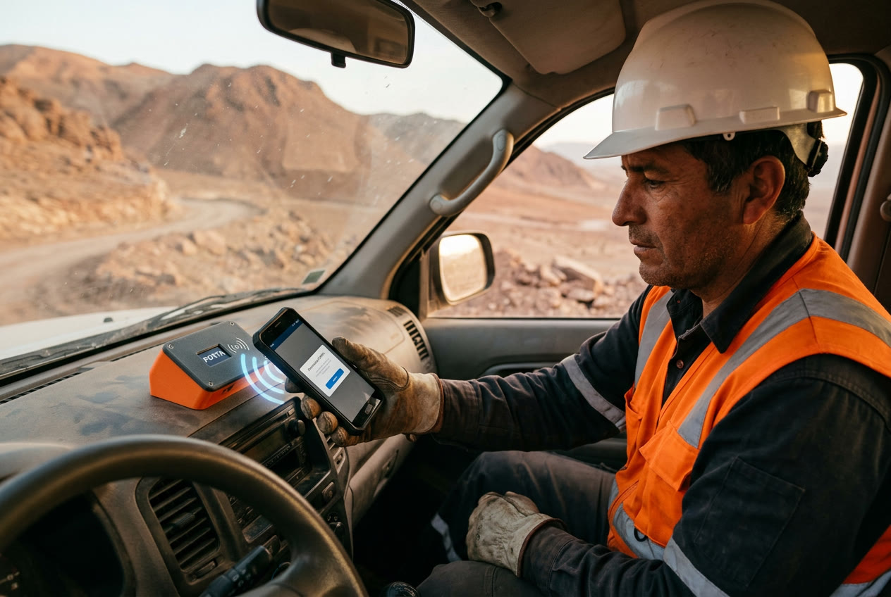
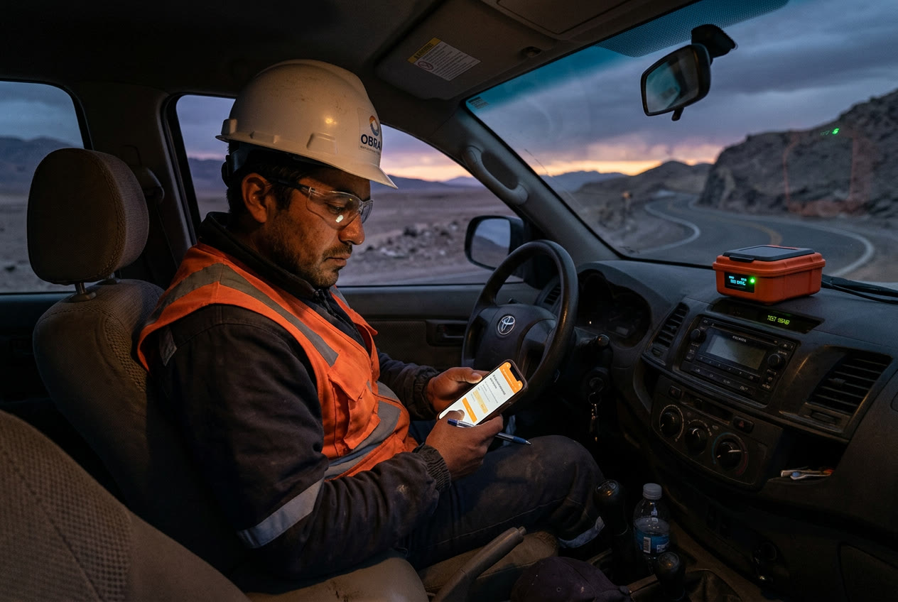
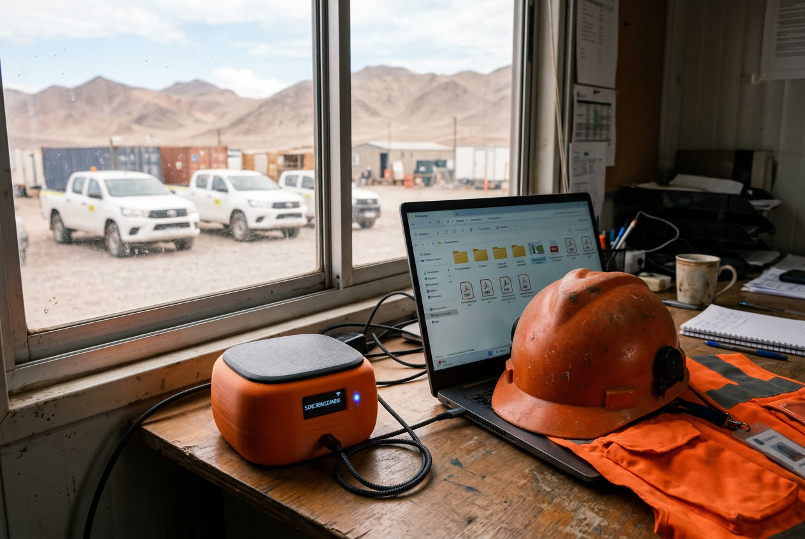

La documentación de la faena, siempre a bordo.
Aunque no haya señal.
Un pequeño computador que viaja en la camioneta, guarda los procedimientos, contratos y hojas de seguridad, y crea su propia red Wi-Fi para que cualquier trabajador los consulte desde su teléfono y complete sus checklists en terreno.
01 · El problema
En terreno, la información está lejos justo cuando más se necesita
Gran parte del trabajo en minería, construcción, energía y transporte ocurre en lugares sin cobertura celular. Ahí, la documentación que exige la prevención de riesgos suele estar en una carpeta de papel o en una nube a la que no se puede entrar.

Imagen referencial generada con IA: charla de seguridad en una faena sin señal.
Documentos que no están
Procedimientos desactualizados, carpetas incompletas, contratos y hojas de datos de seguridad (HDS) que quedaron en la oficina.
Sin señal, sin nube
Google Drive, correos y apps en línea no funcionan sin internet. El trabajador no puede consultar ni registrar nada.
Checklists en papel
Se mojan, se pierden, se llenan “al final del día” y llegan tarde a la oficina. Nadie los revisa a tiempo.
Riesgos que no se detectan
Un conductor con fatiga o un equipo con una falla crítica pueden salir a operar sin que nadie lo sepa.
PORTA2
02 · La solución
PORTA: un “pendrive con Wi-Fi propio” para cada vehículo
PORTA es una cajita del tamaño de un celular grueso que va en el tablero de la camioneta (o en una faena, contenedor o bodega). Por dentro tiene un mini computador Raspberry Pi y una carcasa hecha con impresión 3D.

Render 3D del equipo armado.
Se actualiza solo
Cuando tiene internet en la base, copia la carpeta oficial de Google Drive.
Crea su propia red
En terreno enciende un Wi-Fi local. No usa datos ni necesita señal.
Desde cualquier teléfono
Se abre en el navegador. No hay que instalar ninguna aplicación.
PORTA3
03 · Cómo funciona
Cinco pasos, de la oficina al terreno y de vuelta
1
En la base se sincroniza
PORTA se conecta al Wi-Fi de la oficina y descarga la última versión de la carpeta de Drive que mantiene el área de prevención: procedimientos, contratos, IRL, HDS y plan de emergencia.
2
En terreno se convierte en “router”
Al perder la red de la oficina, PORTA enciende su propia red Wi-Fi (por ejemplo PORTA-CH04). Funciona con la batería de la camioneta.
3
El trabajador acerca su teléfono
En la tapa hay una etiqueta NFC (como la de las tarjetas de pago sin contacto). Al acercar el teléfono aparece “¿Conectarse a PORTA?”. También hay un código QR para los teléfonos que no leen NFC.
4
Se abre el menú en el navegador
Igual que el Wi-Fi de un aeropuerto, se abre solo una página con la documentación y los checklists. Todo queda guardado con nombre, fecha y hora.
5
Al volver, los registros suben solos
Cuando la camioneta regresa a la base, PORTA envía los checklists completados a la carpeta de Drive y descarga los documentos nuevos. El supervisor los ve sin papeles.

Imagen referencial generada con IA: conexión acercando el teléfono a la etiqueta NFC de PORTA.
PORTA4
04 · El menú
Lo que ve el trabajador en su teléfono
Una página simple, con botones grandes y pensada para usar con guantes y al sol. Arriba siempre indica que funciona sin internet.

Mockup de la interfaz (diseño funcional, ya programado como prototipo).
📁 Biblioteca de documentos
Organizada por carpetas igual que en Drive, con buscador: procedimientos de trabajo seguro (PTS), contrato y reglamento interno (RIOHS), información de riesgos laborales (IRL), hojas de datos de seguridad (HDS) y plan de emergencia.
✅ Checklists y registros
Formularios digitales que reemplazan al papel. El sistema evalúa las respuestas y muestra al instante si se puede operar. Los registros quedan en el equipo hasta volver a la base.
PORTA5
05 · Checklists incluidos
Detectar el riesgo antes de salir a operar

Vehículo (pre-uso)
Neumáticos, frenos, luces y baliza, cinturones, extintor vigente, botiquín, radio y documentos (permiso de circulación, revisión técnica, SOAP).
Fatiga y somnolencia
Horas de sueño, cómo se siente, consumo de alcohol o medicamentos, horas despierto y síntomas. Se responde antes de conducir.
Equipo: generador
Ventilación (monóxido de carbono), conexión a tierra, cables, protección diferencial, fugas, extintor cercano y protección auditiva.
Resultado tipo semáforo
AptoTodo conforme. Se guarda el registro y se puede operar.
Con observacionesFallas no críticas. Operar con precaución y reportar.
No apto / No operarFalla en un ítem crítico o fatiga alta: avisar al supervisor.
Los ítems marcados como críticos y los criterios de fatiga los define el área de prevención de cada empresa; los de esta propuesta son un ejemplo. Se pueden agregar más checklists (por ejemplo, trabajo en altura o herramientas eléctricas).
PORTA6
06 · Qué hay que comprar
Lista de materiales para un equipo
Todos los componentes se consiguen en tiendas de electrónica en Chile o en línea. Precios referenciales a octubre de 2026, en pesos chilenos, pueden variar.
| Componente | ¿Para qué sirve? | Precio aprox. |
|---|
| Raspberry Pi 5 (4 GB)El “cerebro”. Trae Wi-Fi incorporado. | Es el computador que guarda los documentos y muestra el menú. | $90.000 |
| Tarjeta microSD 64 GB (clase A2) | El “disco duro”: sistema y documentos. | $12.000 |
| Ventilador activo oficial (Active Cooler) | Evita el sobrecalentamiento en la cabina. | $7.000 |
| Batería para reloj (RTC) de Raspberry Pi 5 | Mantiene la hora correcta sin internet: los registros quedan con fecha y hora reales. | $6.000 |
| Cargador de auto USB-C (12 V → 5 V / 3 A o más) | Alimenta PORTA desde el encendedor de la camioneta. | $12.000 |
| Fuente oficial USB-C 27 W | Para usarlo enchufado en oficina o contenedor. | $14.000 |
| Pantalla OLED 0,96" (I2C) | Muestra el nombre de la red y si está sincronizado. | $5.000 |
| Etiquetas NFC NTAG215 (pack de 10) | Al acercar el teléfono, se conecta a la red. No usa batería. | $4.000 |
| Pulsador, LED y cables Dupont | Botón para forzar sincronización y luz de estado. | $3.000 |
| Carcasa impresa en 3D (PETG o ASA)~90 g de material + servicio de impresión | Protege el equipo del polvo, golpes y calor. | $15.000 |
| Tornillos M2.5, insertos térmicos y velcro industrial | Armado y fijación al tablero. | $8.000 |
| Total por equipo | | ≈ $176.000 |
| Opcional: batería externa 20.000 mAh (USB-C PD) | Para llevar PORTA fuera del vehículo (charla, bodega) unas 8 a 10 horas. | $25.000 |
Versión económica: para un piloto que solo muestre documentos se puede usar una Raspberry Pi Zero 2 W (≈ $25.000) en lugar de la Pi 5, sin ventilador ni batería de reloj, bajando el total a cerca de $100.000. La Pi 5 es más rápida y aguanta más usuarios conectados al mismo tiempo.
PORTA7
07 · La carcasa impresa en 3D
Diseñada para la cabina de una camioneta

Vista explosionada: tapa con NFC y pantalla, Raspberry Pi 5, ventilador y cuerpo de la carcasa.
Características
- Tamaño: aprox. 12 × 8 × 3,6 cm.
- Color naranjo de seguridad, fácil de ubicar en el vehículo.
- Etiqueta NFC pegada bajo la tapa, marcada con el símbolo “acercar aquí”.
- Ranuras de ventilación laterales y salida de aire del ventilador.
- Acceso al puerto USB-C y botón de sincronización.
- Fijación con velcro industrial o tornillos al tablero.
¿Por qué PETG y no PLA?
Dentro de una camioneta estacionada al sol, el tablero puede superar los 60 °C. El PLA (el plástico más común de impresión 3D) se ablanda cerca de esa temperatura y la carcasa se deforma.
El PETG o el ASA resisten más calor y radiación UV, por eso son los recomendados. El archivo del modelo se puede imprimir en cualquier impresora 3D doméstica o en un servicio de impresión.
PORTA8
08 · Cómo está construido (el “stack”)
Las capas de PORTA, explicadas en simple
Todo el software es gratuito y de código abierto. En gris va el nombre técnico para quien quiera profundizar.
Hardware
El mini computador, la tarjeta de memoria, la pantallita, la etiqueta NFC y la carcasa.Raspberry Pi 5 · microSD · OLED SSD1306 · NFC NTAG215 · carcasa PETG
Sistema
El “Windows” del equipo, pero liviano y gratuito. Arranca solo al enchufarlo, sin teclado ni pantalla.Raspberry Pi OS Lite (Linux) · servicios systemd
Sincronización
Un programa que copia la carpeta de Google Drive al equipo cuando hay internet y sube los registros de vuelta. Solo descarga lo que cambió.rclone sync (Google Drive API) · tarea programada
Red Wi-Fi
Detecta si está en la base o en terreno. En terreno enciende su red propia con contraseña y hace que el menú se abra solo al conectarse.NetworkManager (modo punto de acceso) · dnsmasq · portal cautivo
Conexión rápida
La etiqueta NFC y el código QR guardan el nombre y la clave de la red: el teléfono se conecta sin escribir nada.Registro NDEF “WiFi Simple Configuration” · QR “WIFI:S:…;T:WPA;P:…;;”
Aplicación
La página web con el menú, el visor de documentos y los checklists. Guarda las respuestas en una pequeña base de datos dentro del equipo.Servidor web (Python + Flask) · HTML/CSS/JS · base de datos SQLite · exportación PDF/CSV
Estado
La pantalla y el LED muestran si está sincronizando, en modo terreno y cuántas personas están conectadas.script Python · I2C / GPIO
PORTA9
09 · Por qué importa en prevención
Beneficios y alcances
Beneficios
- Documentación vigente en terreno: siempre la última versión aprobada, no una fotocopia antigua.
- Apoya el deber de informar: el trabajador puede consultar su IRL, procedimientos y reglamento cuando lo necesite (Ley 16.744, DS 44 y art. 184 del Código del Trabajo).
- Prevención de la fatiga: la autoevaluación antes de conducir permite detener a tiempo a un conductor no apto.
- Trazabilidad: cada checklist queda con nombre, fecha, hora y equipo; útil para auditorías e investigaciones.
- Menos papel y menos carpetas perdidas o deterioradas.
- Bajo costo: menos de $200.000 por vehículo, sin planes de datos ni licencias.
Consideraciones
- iPhone y NFC: los iPhone no se conectan a Wi-Fi solo con NFC; para ellos se usa el código QR impreso en la tapa (la cámara lo reconoce directo).
- No reemplaza la radio ni los sistemas de emergencia: es una herramienta de consulta y registro.
- Seguridad: red con contraseña y documentos solo de lectura; los contratos personales pueden protegerse con clave.
- Mantención: alguien del área debe mantener ordenada la carpeta de Drive (lo que está ahí es lo que se ve en terreno).
Próximos pasos
- Demo funcionando en un computador para la presentación.
- Prototipo físico en una camioneta (piloto de 1 mes).
- Medir: checklists completados, tiempos y observaciones detectadas.

Imagen referencial generada con IA: autoevaluación de fatiga antes de iniciar la conducción.
PORTA10
10 · Anexos para la presentación
Material visual incluido
Archivos que acompañan este documento, listos para usar en diapositivas.


🎬 Video: Cómo funciona PORTAmotion graphics, ~1 minvideos/porta-como-funciona.mp4
🎬 Video: Modelo 3Dgiro 360° y vista explosionadavideos/porta-3d-giro.mp4
🧊 Renders 3Dequipo armado y explosionadoimagenes/renders-3d/
📱 Mockups del menúpantallas en teléfono y composicionesimagenes/mockups/
📸 Imágenes en terreno (IA)6 escenas de usoimagenes/ia/
💻 Prototipo de la interfazse abre en cualquier navegadorfuente/app/index.html
Las fotografías de personas son ilustraciones generadas con inteligencia artificial con fines referenciales; no corresponden a personas, empresas ni faenas reales. Los documentos, nombres y datos que aparecen en las pantallas son ejemplos.
PORTA11